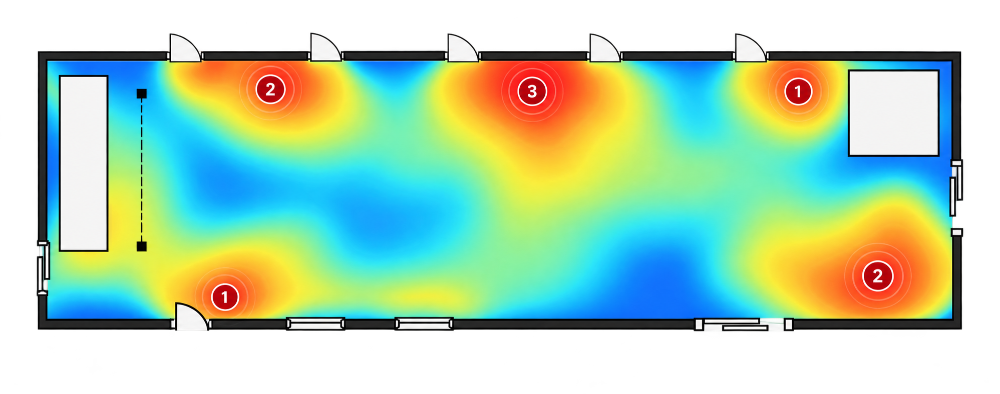

ST. LUKE’S PRESENTA / MUSICAL HUNT
BACK TOTHE 80s
EL ROCK SE ENCUENTRA. LA MÚSICA QUEDA.
Musical Hunt es una búsqueda musical para jugar en familia: recorré el colegio, encontrá las etiquetas NFC escondidas y reuní ocho clásicos de los 80. Cada escaneo revela una canción. ¡Completá la colección en el menor tiempo posible!
¿Cómo se juega? Primero leé las instrucciones y registrá tu familia. Después acercá el celular a cada NFC y abrí el enlace. Tu tiempo comienza al guardar el nombre y termina al desbloquear las ocho canciones.
Leer cómo jugar →ACERCÁ EL CELULAR A UNA ETIQUETA NFC PARA DESCUBRIR UNA CANCIÓN.
LAS PISTAS DEL RECORRIDO
Mapa de los NFC
Los números indican cuántas etiquetas NFC hay en cada zona. No son puntos ni indican el orden: elegí tu propio recorrido y buscá todas las canciones.

Encontrá tu próxima canción.
Todavía no hay canciones desbloqueadas. Probá un escaneo.
Volvé a bloquear las canciones. Tu nombre se conserva.
DALE PLAY AL RECORRIDO
Cómo jugar en familia
Buscá las etiquetas NFC del colegio y desbloqueá ocho canciones de los 80. No hace falta instalar una aplicación para jugar. Leé todo antes de registrarte: el tiempo empieza cuando guardás el nombre.
Prepará el celular
Jugá con un solo celular por familia. Desbloquealo, usá conexión a Internet y mantené el mismo navegador durante todo el recorrido. Si tu teléfono lo requiere, activá NFC.
Registrá a tu familia
Leé estas instrucciones antes de guardar el nombre: en ese momento empieza el cronómetro. El nombre familiar aparecerá en el ranking público; podés corregirlo después desde el menú sin reiniciar el tiempo.
Buscá las etiquetas NFC
Usá el mapa para buscar: los números indican cuántos NFC hay en cada zona. Acercá la parte superior o trasera del celular a una etiqueta. Mantenelo cerca unos segundos y tocá la notificación para abrir el enlace de Musical Hunt.
Desbloqueá y escuchá
La web muestra la canción conseguida y reproduce un fragmento. Si no suena, tocá Reproducir; también podés pausarlo. Volver a escanear la misma canción no suma otro desbloqueo.
Completá las ocho canciones
Revisá tu colección en Álbumes, como carrusel o cuadrícula. El tiempo se detiene al conseguir las ocho. El ranking compara el tiempo total desde el registro; gana la familia que complete más rápido.
Conservá tu recorrido
No borres los datos del navegador ni uses incógnito. Los reinicios los gestiona Organización. Si el recorrido está cerrado, no se pueden registrar familias ni desbloquear canciones nuevas, pero sí escuchar las ya conseguidas.
LAS PISTAS DEL RECORRIDO
Mapa de los NFC
Los números indican cuántas etiquetas NFC hay en cada zona. No son puntos ni indican el orden: elegí tu propio recorrido y buscá todas las canciones.
El NFC no abre el enlace
Desbloqueá el celular y probá acercarlo desde otra parte de la carcasa. Si aparece una notificación, tocala. Revisá la conexión a Internet; si sigue sin funcionar, pedí ayuda a Organización.
¿Puedo volver a ver estas instrucciones?
Sí. Abrí el menú y elegí Cómo jugar todas las veces que quieras. Desde ese menú también podés cambiar el nombre familiar y elegir modo claro u oscuro.
¿Cómo se decide el ganador?
Se compara el tiempo entre el registro familiar y el último de los ocho desbloqueos. Los recorridos desbloqueados manualmente para pruebas no compiten por el premio. Mirá el Ranking para ver los resultados.
Preparar el recorrido
Desbloquea las ocho canciones para probar. En la competencia, este participante queda fuera del premio.
Estado del recorrido: —
Cerrar bloquea registros y nuevos desbloqueos. Lo ya conseguido se puede escuchar. El tiempo desde el registro sigue corriendo.
Gana quien complete las ocho en menos tiempo desde su registro. Los desbloqueos manuales quedan fuera del premio.
Grilla: horarios por canción. Leaderboard: gestión y borrados.
Preparar las etiquetas NFC +
Con el demo publicado, grabá cada enlace como URL en una etiqueta NFC. Abrí siempre los enlaces en el mismo navegador para conservar la colección. No hace falta un lector dentro de la página.
Necesitás una dirección HTTPS accesible desde el celular. Los enlaces locales sirven solo para probar en esta computadora.
Grabá el enlace de esta web, no el de Spotify: así se guarda el desbloqueo antes de escuchar.
EL RECORRIDO EN VIVO
Leaderboard
Gana quien complete las ocho canciones en menos tiempo desde su registro. Las pruebas manuales no compiten por el premio.
En la grilla, deslizá horizontalmente para ver las ocho canciones.